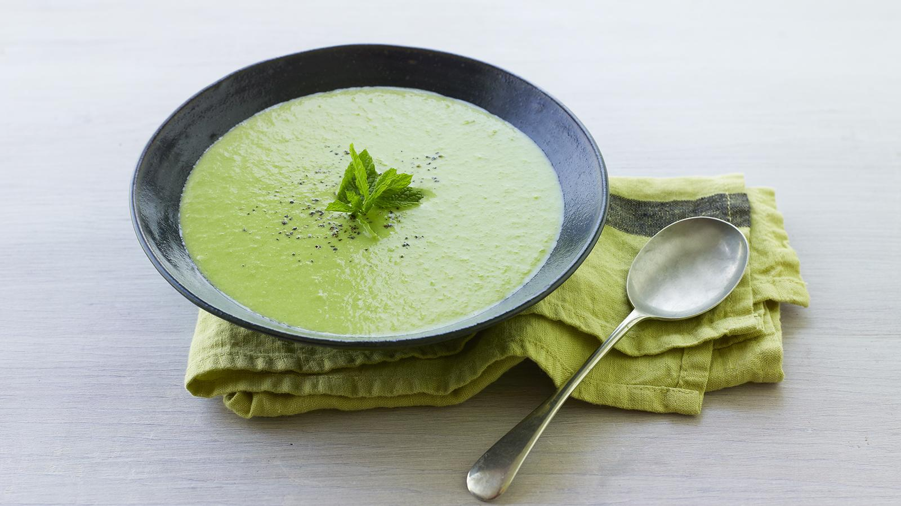

Ertwensoep

Description
This easy pea soup recipe is one you'll make time and again when you're in a rush.
The recipe scales up easily and freezes well, so there's no reason not to make loads.
Ingredients
- 1 tbsp olive oil
- 1 garlic clove, chopped
- Onion, chopped
- 200g/7oz frozen peas
- 300ml/10fl oz chicken stock (vegetarians may substitute vegetable stock)
- 50ml/2fl oz double cream
- Salt and freshly ground black pepper
- Mint leaf, to garnish
Steps
- Heat the oil in a saucepan over a medium heat. Add the onion and garlic and fry for 3 to 4 minutes, until softened.
- Add the frozen peas and chicken or vegetable stock and bring to the boil. Reduce the heat and simmer for ten minutes.
- Add the cream and use a hand blender to liquidize the soup.
- Season, to taste and serve in a warm bowl, garnished with a mint leaf.
Homepage